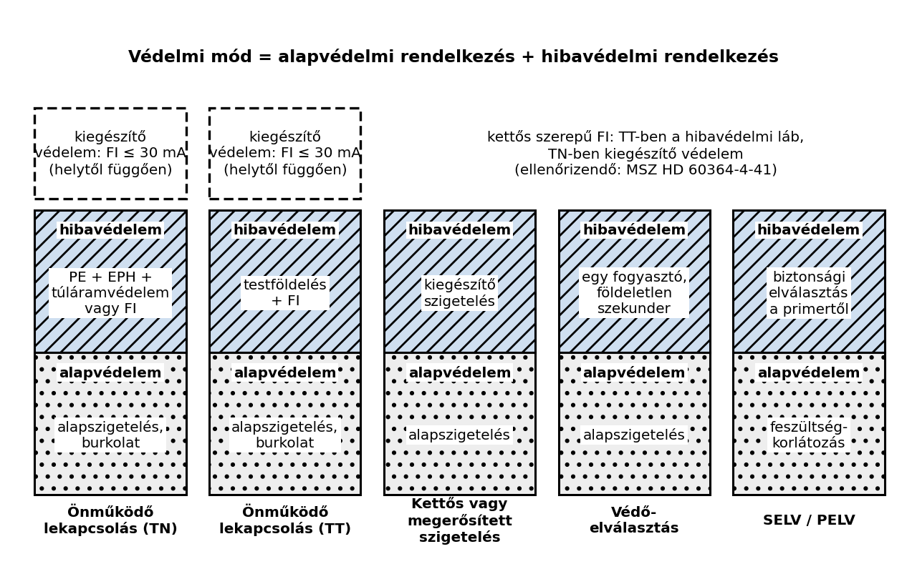
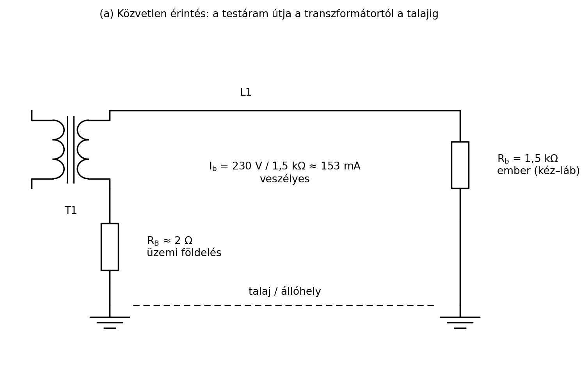
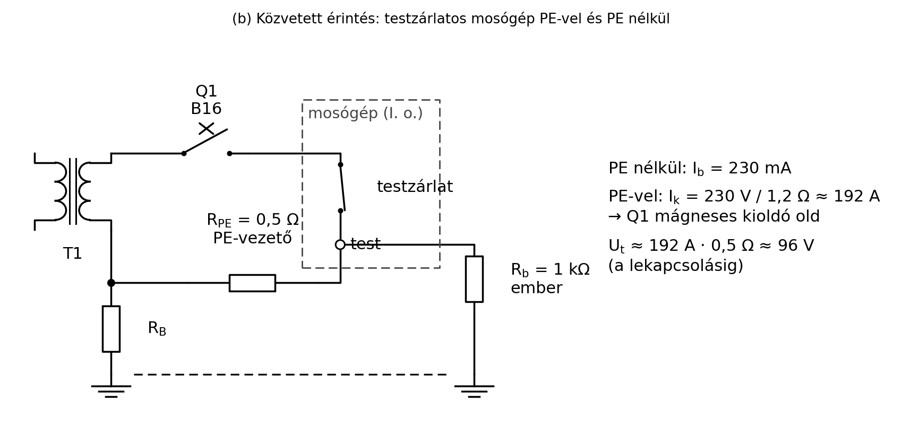

A villanyszerelő a munkahelyén gyakran találkozik régi tervekkel, régi elosztókkal és olyan szóhasználattal, amely már nem egyezik a mai szabványokkal. Az ügyfél „érintésvédelemről”, „nullázásról” vagy „védőföldelésről” beszél, a mai terv pedig alapvédelemről, hibavédelemről és kiegészítő védelemről. Ha nem értjük ezeknek a fogalmaknak a pontos tartalmát, rosszul tervezünk, hibásan szerelünk, és akár életveszélyes állapotot is létrehozhatunk. Ez az alfejezet azt tanítja meg, hogyan gondolkodjunk az áramütés elleni védelemről mai, szabványos szemlélettel, és hogyan fordítsuk le a régi kifejezéseket.
Az áramütés elleni védelmet a szabvány (MSZ HD 60364-4-41, ellenőrizendő: aktuális kiadás) nem eszközök listájaként, hanem védelmi módok (protective measures) felsorolásaként adja meg. Minden védelmi mód kétlábú: az egyik láb, az alapvédelmi rendelkezés, a normál (hibamentes) állapotot kezeli, a másik, a hibavédelmi rendelkezés, az első hibát. A kiegészítő védelem nem önálló mód, hanem harmadik, ráépülő elem, és csak meghatározott helyeken kötelező (lásd lent, a Kiegészítő védelem szakaszban).
| Védelmi mód | Alapvédelmi rendelkezés | Hibavédelmi rendelkezés | Tipikus alkalmazás | Hol tárgyaljuk |
|---|---|---|---|---|
| Önműködő lekapcsolás (TN) | alapszigetelés, burkolat | PE + EPH + túláramvédelem vagy FI | lakás, ipar | Automatikus lekapcsolás: TN és TT, kioldási feltétel, Védővezető, PEN és a keresztmetszet méretezése |
| Önműködő lekapcsolás (TT) | alapszigetelés, burkolat | testföldelés + FI | TT-csatlakozás | Hálózati rendszerek: TN-C, TN-S, TN-C-S, TT, IT, Földelők és földelési ellenállás |
| Kettős vagy megerősített szigetelés | alapszigetelés | kiegészítő szigetelés (a megerősített szigetelés egyben mindkettő) | II. osztályú kéziszerszám | Védőkisfeszültség, II. osztály, védőelválasztás és egyéb módok |
| Védőelválasztás | alapszigetelés | egyetlen fogyasztó, földeletlen szekunder, galvanikus elválasztás | borotvaaljzat, szűk fémes tér | Védőkisfeszültség, II. osztály, védőelválasztás és egyéb módok |
| SELV / PELV | a feszültség korlátozása (+ 25 V AC / 60 V DC felett szigetelés vagy burkolat, ellenőrizendő) | biztonsági elválasztás a primer körtől | medencevilágítás, vezérlés | Védőkisfeszültség, II. osztály, védőelválasztás és egyéb módok |
| Csak felügyelt helyen: akadály, elérhetetlen elhelyezés, nem vezető helyiség, földeletlen EPH | – | – | villamos üzemi tér | Védőkisfeszültség, II. osztály, védőelválasztás és egyéb módok (röviden) |
| Kiegészítő védelem (nem önálló mód): FI ≤ 30 mA, kiegészítő EPH | – | – | aljzatkörök, fürdőszoba | Áram-védőkapcsoló (FI) és kiegészítő védelem, Egyenpotenciálra hozás: fő- és kiegészítő EPH |
Az öt fő védelmi mód két lábát az alábbi ábra egymásra rakott téglákként mutatja.

Az ábrából a FI kettős szerepe is leolvasható: TT-rendszerben a FI maga a hibavédelmi láb (nélküle a nagy földelési ellenállás miatt a túláramvédelem nem oldana), TN-rendszerben viszont – ahol a hibavédelmet a PE és a kismegszakító adja – a 30 mA-es FI kiegészítő védelem. Így válaszolható meg egyértelműen az Önellenőrzés 4. kérdése is: a FI attól függően hibavédelmi vagy kiegészítő elem, hogy melyik védelmi mód része, a PE-t azonban egyikben sem helyettesíti.
Definíció. Közvetlen érintés: az emberi test olyan, szigeteletlen, feszültség alatt álló részt érint meg, amelynek normál üzemben is feszültsége van (például a fázisvezető csupasz rézere).
Definíció. Közvetett érintés: az emberi test olyan, normál üzemben feszültségmentes részt érint meg, amely csak hiba (például szigetelési hiba, testzárlat) következtében kerül feszültség alá. Tipikus példa a motorszivattyú fémteste.
Definíció. Alapvédelem (basic protection): a közvetlen érintés elleni védelem. Célja, hogy a feszültség alatt álló részek normál üzemben ne legyenek megérinthetők. Ide tartozik a szigetelés, a zárt burkolat és az elérhetetlen elhelyezés; a védő törpefeszültség (SELV/PELV) önálló védelmi mód, amely a feszültség korlátozásával az alap- és a hibavédelmet egyszerre adja.
Definíció. Hibavédelem (fault protection): a közvetett érintés elleni védelem. Célja, hogy ha hiba következtében egy test feszültség alá kerül, az áramütés kockázata ne álljon fenn vagy azonnal lekapcsoljon a hiba. Ide tartozik az automatikus lekapcsolás, a kettős vagy megerősített szigetelés, a védőelválasztás és a védőföldeléssel kombinált FI.
Definíció. Kiegészítő védelem (additional protection): olyan védelmi intézkedés, amely az alapvédelem és a hibavédelem mellett további biztonságot ad, különösen laikusok, gyermekek, nedves helyiségek vagy hordozható eszközök esetén. Leggyakoribb eleme a legfeljebb 30 mA névleges hibaáramú áram-védőkapcsoló (FI), és a kiegészítő egyenpotenciálra hozás.
Szabvány. A mai magyarországi és európai gyakorlatban az áramütés elleni védelmet az MSZ HD 60364-4-41 sorozat és az MSZ EN 61140 szerint három kategóriára osztjuk: alapvédelemre, hibavédelemre és kiegészítő védelemre. A korábbi magyar szóhasználatban a „közvetlen érintés elleni védelem” feleltethető meg az alapvédelemnek, a „közvetett érintés elleni védelem” a hibavédelemnek, a „kiegészítő védelem” pedig részben új fogalom. A régi „érintésvédelem” szó általában a hibavédelmet jelentette, de a mai szabványok ezt a szót kerülik, mert nem egyértelmű. (ellenőrizendő: aktuális szabványkiadások és pontos megnevezések.)
A régi dokumentációkban és a szakmai köznyelvben még ma is gyakran hallani az alábbi kifejezéseket. Ezeket a mai szabványos nyelvre így fordíthatjuk le:
Régi: „érintésvédelem”. Általában a közvetett érintés elleni védelmet, azaz a mai hibavédelmet jelentette. A régi „érintésvédelem” nem tartalmazta az alapvédelmet, és a kiegészítő védelmet sem a mai értelemben. Régi: „nullázás”. Olyan hibavédelmi megoldás, amelynél a készülék testét a hálózat PEN-vezetőjéhez vagy a nullavezetőhöz kötötték, hogy a testzárlat rövidzárlatot okozzon, és a túláramvédelem lekapcsoljon. A mai TN-rendszerekben ennek a szerepét a védővezető (PE) és a túláramvédelem vagy FI látja el. A „nullázás” kifejezést ma már nem használjuk a szabványban, mert a nullavezető és a védővezető szétválasztása miatt félrevezető lehet. Régi: „védőföldelés”. Kettős jelentésű volt: jelenthette a fémtest közvetlen földelését (TT-rendszerben), vagy a védővezetőhöz kötést. Mai értelemben a védőföldelés a test és a földelő közötti fémes kapcsolat, amely a hibavédelem része. Régi: „FI-relé”. A mai hivatalos megnevezés áram-védőkapcsoló (RCD). Az FI-relé köznyelvi név, a gyakorlatban mindenki érti, de a tervdokumentációban lehetőleg az RCD vagy áram-védőkapcsoló kifejezést használjuk.
Az alapvédelem a tervezés és a szerelés legegyszerűbb, de legfontosabb rétege. Célja, hogy a feszültség alatt álló részeket senki ne érhesse meg szándékosan vagy véletlenül.
Alapvédelem módjai:
A szerelő a mindennapi munkában leggyakrabban az első két móddal találkozik, és a hibájuk szemrevételezéssel is felismerhető. Az alábbi ábra három helyes/hibás párt mutat (felül a helyes, alul a hibás állapot): 1 az elosztó fedlapján minden üres modulhelyet vakfedél zár – hiányzó vakfedélnél a rés mögötti sín ujjal elérhető; 2 a kötődobozt csak szerszámmal nyitható fedél zárja – fedél nélkül a kötések érinthetők; 3 ép köpenyű kábel – sérült köpeny és érszigetelés, csupasz ér.
Az 1. hibát a felhasználó gyakran „észre sem veszi”, mert a fedlap a helyén van; a próbaujj-szabály (IP-kód, ellenőrizendő: MSZ EN 60529) éppen az ilyen réseket zárja ki. A hibás állapotot csak feszültségmentesítés után szabad megszüntetni. A HTML-kiadásban a párok egyenként, magyarázattal jeleníthetők meg.
A hibavédelem akkor lép működésbe, ha az alapvédelem valamelyik eleme meghibásodik, például egy motor belső szigetelése testzárlatossá válik. A hiba következtében a motor fémteste feszültség alá kerülhet; ezt a fémtestet a szabványos szóhasználat „testnek” nevezi.
Definíció. Test: a villamos készülék olyan, ember által megérinthető vezető (általában fém) része, amely normál üzemben nincs feszültség alatt, de hibánál feszültség alá kerülhet.
Definíció. Testzárlat: a fázisvezető vagy más feszültség alatt álló rész és a test közötti véletlen, fémes vagy íves kapcsolat.
Ha egy test testzárlat miatt feszültség alá kerül, és egy ember megérinti, közvetett érintés jön létre. A hibavédelem feladata, hogy ilyenkor megakadályozza a veszélyes testáram kialakulását.


A (b) rajzon a PE-ág és az ember párhuzamosan kapcsolódik a test és a csillagpont közé. A PE tehát nem „elszívja” az áramot az ember elől, hanem olyan nagy hibaáramot hoz létre (itt kb. 192 A), hogy a Q1 kismegszakító mágneses kioldója gyakorlatilag azonnal lekapcsol. A lekapcsolásig a test érintési feszültsége a PE-vezető feszültségesése (kb. 96 V) – ezért kell a lekapcsolásnak gyorsnak lennie, és ezért nem elhanyagolható a PE-vezető ellenállása sem.
A kiegészítő védelem nem helyettesíti sem az alapvédelmet, sem a hibavédelmet, hanem további biztonságot nyújt olyan helyzetekben, ahol a két fő védelmi réteg ellenére is nagy a kockázat. Ilyen helyzet például:
Leggyakoribb kiegészítő védelmi elemek:
A három védelmi réteg nem felcserélhető, és nem pótolhatja egymást. A tervezés és a szerelés során mindig az alábbi sorrendben kell gondolkodni:
Miért éppen 50 V és 0,4 s? A veszély nem egyedül az áram nagyságától, hanem az áram nagyságától és az időtartamától együtt függ: ezt mutatja Az áram élettani hatásai és az elsősegélynyújtás alfejezet áram–idő ábrájának c1 görbéje (a kamrafibrilláció határa). A tartósan megengedett érintési feszültség ( AC) száraz körülmények között, kb. 2 kΩ testimpedanciával néhány tíz mA-es (kb. 25 mA) testáramot ad, amely a görbe szerint hosszabb ideig sem okoz fibrillációt; kedvezőtlen esetben (1 kΩ) ez már 50 mA, a tartomány széle. Nedves környezetben a testimpedancia kisebb, ezért ott a határ . Nagyobb feszültségnél nagyobb áram folyik, tehát a hibát annál rövidebb idő alatt kell megszüntetni. A TN-rendszer testzárlatánál az érintési feszültség jellemzően a fázisfeszültség egy része, néhányszor tíz volttól kb. 120 V-ig (a 3. feladatban 96 V): 96 V és 1 kΩ mellett a 96 mA a c1 görbe közelítő pontjaiból számolva kb. 0,5 s alatt éri el a határt, a 0,4 s-os végáramköri lekapcsolási idő ennél rövidebb. TT-rendszerben az érintési feszültség a teljes fázisfeszültséghez lehet közel (kb. 216 V → a görbe kb. 0,2 s-ot ad), ezért ott a megengedett idő 0,2 s. Ez magyarázat, nem méretezési módszer: a szabványi határokat nem a tanuló számolja ki, hanem a szabványból veszi.
| Rendszer, helyzet | Jellemző | Megengedett idő | Lekapcsoló eszköz |
|---|---|---|---|
| száraz hely, tartós érintés | legfeljebb 50 V AC | nincs időkorlát | – |
| nedves, különleges hely | legfeljebb 25 V AC | nincs időkorlát | – |
| TN, végáramkör (≤ 32 A) | kb. 50–120 V | 0,4 s | kismegszakító, biztosító vagy FI |
| TN, elosztó áramkör | kb. 50–120 V | 5 s | olvadóbiztosító, megszakító |
| TT, végáramkör (≤ 32 A) | akár 230 V közelében | 0,2 s | rendszerint FI |
| TT, elosztó áramkör | akár 230 V közelében | 1 s | FI (megszakító) |
Minden érték (ellenőrizendő: MSZ HD 60364-4-41, MSZ IEC 60479-1 aktuális kiadása); a feltételeket az Automatikus lekapcsolás: TN és TT, kioldási feltétel alfejezet táblázata és példái tárgyalják.
Továbbvitt eredmény. A hármas tagolás alapozza meg a későbbi védelmi fejezeteket: a Hálózati rendszerek: TN-C, TN-S, TN-C-S, TT, IT alfejezetben a hibavédelem hálózati feltételeit, az Automatikus lekapcsolás: TN és TT, kioldási feltétel alfejezetben a lekapcsolási időket és a hurokimpedancia feltételt, az Áram-védőkapcsoló (FI) és kiegészítő védelem alfejezetben a FI működését és határait, a Védőkisfeszültség, II. osztály, védőelválasztás és egyéb módok alfejezetben pedig az alapvédelem speciális módozatait.
Egy társasházi lakás felújításakor a szerelő azt tapasztalja, hogy a régi villanybojler fémköpenye a PEN-vezetőre van kötve, külön védővezető nincs, és az elosztóban FI sincs. Az ügyfél kéri, hogy „az érintésvédelmet nézze meg, mert néha megráz a zuhanyzóban”.
Mivel a panasz aktív veszélyhelyzetre utal, a szerelő az öt biztonsági lépés szerint jár el: leválasztja a kört a mérőhely utáni főkapcsolóval, biztosítja a visszakapcsolás ellen, kétpólusú feszültségvizsgálóval megállapítja a feszültségmentességet, szükség esetén földel és rövidre zár, a szomszédos feszültség alatt maradó részeket pedig lefedi. Ezután méri a szigetelési ellenállást a bojler felé. A mérés kimutatja, hogy a fűtőbetét testzárlatos. A régi úgynevezett nullázás csak akkor működne, ha a PEN-vezető végig hibátlan, és a testzárlat elég nagy zárlati áramot hoz létre a kismegszakító lekapcsolásához. Ha a PEN-vezető a mérő előtt megszakad, a bojler teste teljes fázisfeszültségre kerülhet, és a zuhanyzóban álló, földelt vízcsőhöz érve az emberen át záródik az áramkör. Háromfázisú betáplálásnál a szakadás a terhelések arányában tolja el a csillagpontot, és ez a feszültség a PEN-re kötött testeken is megjelenik; a számpéldát lásd: Háromfázisú teljesítmény, aszimmetria és a nullavezető.
A hiba gyökere, hogy a bojler teste a PEN-vezetőre van kötve, külön PE nincs. A helyes megoldás: a fürdőszobai körhöz külön PE-vezető kiépítése, a PEN szétválasztása az elosztóban (TN-C-S), a testzárlatos fűtőbetét (vagy a bojler) cseréje, a fürdőszobában kiegészítő egyenpotenciálra hozás, az elosztóban pedig 30 mA-es FI beépítése a fürdőszobai áramkörre. A régi „érintésvédelem” tehát nem feleltethető meg automatikusan a mai hibavédelemnek, és a „nullázás” kifejezés mögött sokszor korszerűtlen, veszélyes megoldás rejtőzik.
A „megráz”, „bizserget”, „csíp” panasz mögött lehet ártalmatlan jelenség és életveszélyes hiba is, ezért nem találgatunk: a tünetből indulva, mérésekkel szűkítünk.
Biztonsági korlát. A panasz aktív veszélyt jelezhet. Első lépés: az érintett kört lekapcsoljuk, a készüléket kivonjuk a használatból, és ezt az ügyfélnek is megmondjuk. Mérni csak az öt biztonsági szabály szerint, feszültség alatt pedig csak jogosult személy (vagy az ő közvetlen felügyelete mellett) szabad.
| Tünet, jellemző | Valószínű ok | Ellenőrző mérés | Javítás | Hol |
|---|---|---|---|---|
| csak egy I. osztályú készülék testén | megszakadt PE és szivárgó készülék | PE-folytonosság az aljzattól az elosztóig; a készülék szigetelésmérése (feszültségmentesen) | PE helyreállítása, készülék javítása | 21.4, 22.3, 23.2 |
| több készülék testén, a terheléstől függően változik | PEN-szakadás a szétválasztás előtt, vagy N–PE csere | N–PE és L–PE feszültség terhelve és terheletlenül (csak felügyelettel); hurokimpedancia | azonnali lekapcsolás, a hálózati engedélyes értesítése, PEN, illetve bekötés javítása | 21.2 |
| kád, csap és radiátor között, fürdéskor | hiányzó kiegészítő EPH és szivárgás vagy PEN-feszültségesés | feszültség a fémrészek között kis belső ellenállású (LoZ) műszerrel; EPH-folytonosság | kiegészítő EPH, a forrás (szivárgás, PEN) megszüntetése | 22.2 |
| nagy impedanciájú műszerrel 40–100 V, LoZ-on összeomlik | kapacitív csatolás (szellemfeszültség), nem fémes hiba | LoZ-mérés | nincs javítandó hiba; dokumentálás, az ügyfél tájékoztatása | 22.2, 6. feladat |
| a FI old, ha egy készülék be van dugva | szigetelési hiba a készülékben | szigetelésmérés az összekötött L és N, valamint a PE között | a készülék javítása vagy cseréje | 21.4 |
| TT-telken a fém kerítésen vagy kerti szerkezeten | túl nagy földelési ellenállás, hiányzó vagy hibás FI | földelési ellenállás mérése, FI-vizsgálat | földelő javítása, FI beépítése, a testzárlat megszüntetése | 22.1 |
Szabály. A FI kioldása és a „rázás” tünet, nem ok. Tilos a forrást egy utólag beépített FI-vel vagy EPH-vezetővel „elfedni”: előbb a hibát keressük meg és szüntetjük meg, a védelem pedig az utána maradó kockázatot csökkenti (lásd az Egyenpotenciálra hozás: fő- és kiegészítő EPH alfejezet tanulságát).
1. hiba: A FI-t alapvédelemnek tekintik. Sokan azt hiszik, ha van FI, elhagyható a szigetelés vagy a védővezető. A FI csak akkor lép működésbe, ha már van hibaáram, tehát nem gátolja meg a feszültség alatt álló rész megérintését, és nem pótolja a védővezetőt. Helyes gyakorlat: a FI nem pótolja a szigetelést és a védővezetőt; TN-rendszerben kiegészítő védelemként, TT-rendszerben a földeléssel együtt hibavédelemként (önműködő lekapcsolásként) építjük be, mindig az alapvédelem és a védővezető megléte mellett.
2. hiba: A régi „nullázás” és a mai védővezetős rendszer összekeverése. A nullázásnál a test PEN-re kötése azt eredményezi, hogy a PEN szakadása esetén a test feszültség alá kerül. A mai TN-S rendszerben a PE és az N külön van, és a védővezető soha nem terhelőáramot visz. Helyes gyakorlat: a régi kifejezéseket lefordítjuk, de a szerelést a mai szabvány szerint végezzük: külön PE, FI, kiegészítő EPH.
3. hiba: Az érintésvédelmet csak a fi-relével azonosítják. A FI fontos kiegészítő védelem, de a hibavédelem önmagában a túláramvédelemmel is működhet TN-rendszerben. A FI nélküli, de jó védővezetős TN-rendszer is lehet szabványos hibavédelem, míg a FI nem teszi szabványossá a rossz védővezetős rendszert. Helyes gyakorlat: mindig a teljes védelmi láncot vizsgáljuk: szigetelés, védővezető, hurokimpedancia, megszakító/FI.
4. hiba: A kiegészítő egyenpotenciálra hozást nem kötik be a fürdőszobában. Ha a vízcső és a villamos védővezető között nincs összekötés, akkor egy testzárlatos készülék érintésekor az emberen keresztül nagy feszültségkülönbség léphet fel. Helyes gyakorlat: a fürdőszobában minden érinthető vezető fémszerkezetet be kell kötni a kiegészítő EPH-ba.
Gyakorlás: ennek az alfejezetnek a kidolgozott példái, gyakorlatai és megoldással ellátott feladatai az Összefoglaló feladatgyűjtemény villanyszerelő tanulóknak című kötet 21.1 szakaszában találhatók.
Az áramütés elleni védelmet a mai szabvány három rétegre bontja: alapvédelem (a közvetlen érintés ellen), hibavédelem (a közvetett érintés ellen) és kiegészítő védelem (többletvédelem, jellemzően 30 mA-es FI és kiegészítő EPH). Az alapvédelem a normál üzemben feszültség alatt álló részeket szigeteléssel, burkolattal, elérhetetlen elhelyezéssel vagy védő törpefeszültséggel teszi érinthetetlenné. A hibavédelem akkor lép működésbe, ha hiba következtében egy test feszültség alá kerül; leggyakrabban a test védővezetőre kötése és a túláramvédelem vagy FI automatikus lekapcsolása. A kiegészítő védelem nem helyettesíti ezeket, hanem a maradék kockázatot csökkenti. A régi „érintésvédelem” általában a mai hibavédelemnek feleltethető meg, a „nullázás” a test PEN-vezetőre kötésének (TN-C) régi neve, amelyet ma a különálló PE-vel kiépített TN-S/TN-C-S megoldás vált fel; a „védőföldelés” a régi szövegekben a test földelését vagy a védővezetőre kötést jelentette. Továbbvitt eredmény: ez a hármas tagolás alapozza meg a Hálózati rendszerek: TN-C, TN-S, TN-C-S, TT, IT, az Automatikus lekapcsolás: TN és TT, kioldási feltétel, az Áram-védőkapcsoló (FI) és kiegészítő védelem és a Védőkisfeszültség, II. osztály, védőelválasztás és egyéb módok alfejezeteket. A legfontosabb biztonsági szabály: hálózati feszültségű munkát csak jogosult személy végezhet, és a védelmi rétegek közül egyet sem szabad elhagyni.
A szabványi hivatkozások tájékoztató jellegűek: MSZ HD 60364-4-41, MSZ EN 61140, MSZ EN 60529, MSZ EN 61557. A pontos szakasz- és táblázatszámok, az aktuális kiadások és a határértékek a kiadás előtt ellenőrizendők. A példákban szereplő testellenállások, áramértékek és hurokimpedancia-értékek tanulási célú, egyszerűsített értékek.